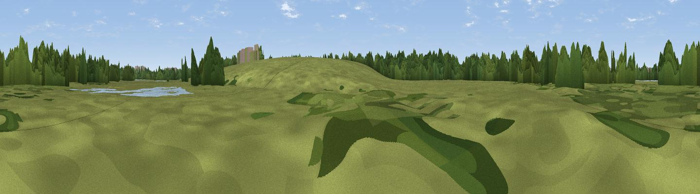

Iron Trunk Hide
#46008 in England · top 98% of its area beats it · near CosgroveWhere it is
The exact computed spot (SP 80402 42032). Click the marker for map links.
The view, rendered

A 360° render of this exact spot computed from the terrain model, tree cover and land cover — summer colours, afternoon light, calibrated against photographs of famous viewpoints. Real trees, hedges and buildings will differ in detail.
The panorama
Grey silhouette: terrain skyline in each direction (720 bearings, Earth curvature and refraction included). Dashed green: skyline with trees (+15 m) and buildings (+8 m) as obstacles. Blue strip: how far the ground is visible on each bearing.
Where the view opens
Wedge length = distance to the farthest visible ground on that bearing (vegetation-aware). Rings at 10, 25 and 50 km.
What fills the view
57% grassland · 33% woodland · 6% cropland · 2% built-up · 2% water
Angular shares of the visible panorama (visual magnitude), not map area. Landscape diversity 0.44 (0–1 Shannon).
Key numbers
More beautiful places nearby
The staircase of upgrades: each row has a higher view potential than everything closer. Driving times are estimates from straight-line distance, calibrated against real road routing — check an actual route before setting out.
| Place | Direction | Drive | Score |
|---|---|---|---|
| Viaduct Hide | E · 1 km | ~2 min | 20.1 |
| The Belvedere | ESE · 6 km | ~13 min | 23.5 |
| Hartwell Heights | N · 9 km | ~18 min | 29.3 |
| Viewpoint near Sherington | ENE · 10 km | ~19 min | 36.6 |
| Viewpoint near Newton Longville | SSE · 11 km | ~21 min | 36.9 |
| Viewpoint near Bow Brickhill | SE · 13 km | ~24 min | 54.0 |
| Viewpoint near Bow Brickhill | SE · 13 km | ~24 min | 57.0 |
| Viewpoint near Quainton | SSW · 21 km | ~35 min | 64.9 |
52.07083, -0.82840 · source: osm viewpoint · position refined by local search. Computed location — check access rights before visiting.